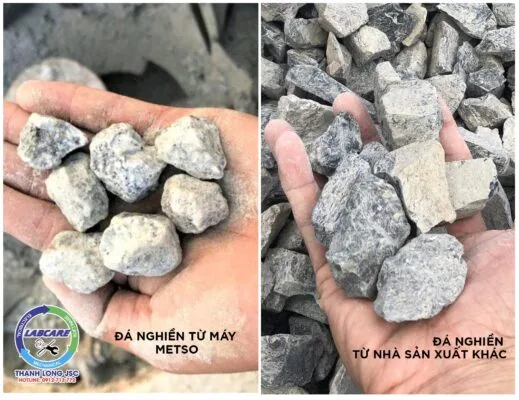
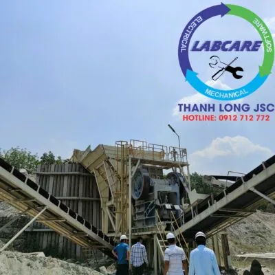
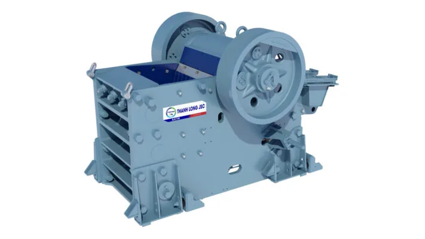
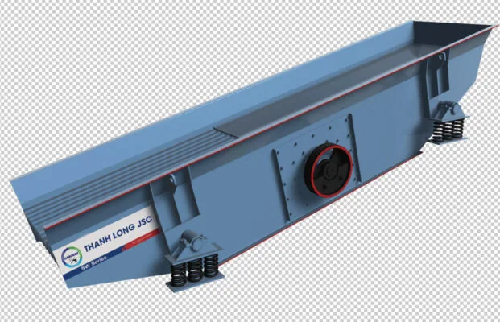
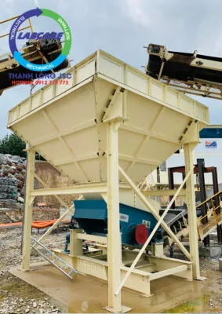
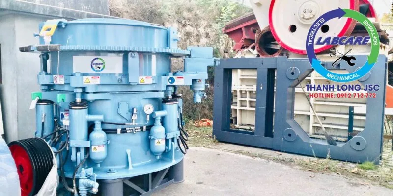
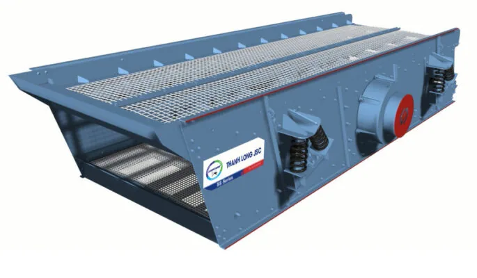
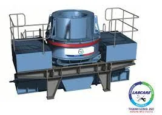
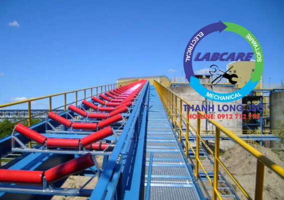

Đá là nguyên liệu không thể thiếu trong xây dựng, Có nhiều loại như: Đá dăm (hay còn gọi là 0x4), Đá mi bụi, Đá mi sàng, Đá 4×6, Đá 5×7, Đá hộc, quan trọng nhất vẫn là đá 1×2, … Với ưu điểm là dễ mua, giá thành rẻ và có tính ứng dụng cao. Vậy máy nghiền đá 1×2 có những thiết bị gì và hoạt động theo nguyên tắc nào ?
Máy nghiền đá 1×2 quan trọng ra sao ?
Đá 1×2: Là một sản phẩm của quy trình từ máy nghiền đá hộc. Kích thước đá 1×2 nhiều loại 10x28mm là lớn nhất. Còn có các viên đá nhỏ hơn như 10x16mm, 10x20mm…. Tùy nhu cầu sử dụng, có thể chọn sản phẩm lẫn hoặc sàng lọc theo kích thước chuẩn.
Đá 1×2 được dùng để đổ bê tông làm nhà cao tầng, đường băng sân bay Long Thành, cầu cảng, đặc biệt cấp phối các nhà máy bê tông tươi hoặc bê tông nhựa nóng, gạch không nung, phụ gia cho công nghệ bê tông đúc ống cống, thi công các công trình giao thông và phụ gia cho các loại VLXD khác, cấp phối các dự án cao tốc Bắc – Nam.

Thực trạng khai thác đá 1×2 tại Việt Nam
Việt Nam có ¾ diện tích bề mặt là đồi núi có nguồn gốc lâu năm và đa số trong đó là núi đá vôi và đá granite. Cho nên có thể nói tài nguyên đá xây dựng tại Việt Nam là vô cùng lớn.
Tại nước ta, 125 tụ khoáng đá vôi đã được tìm kiếm và thăm dò, trữ lượng ước đạt 13 tỷ tấn, tài nguyên dự báo khoảng 120 tỷ tấn. Hiện nay tại Vùng Trung Du Miền Núi Phía Bắc và Bắc Trung Bộ khu vực tập trung khai thác đá vôi phục vụ xây dựng công suất lớn và chất lượng cao.
Đá granite được khai thác chủ yếu từ các mỏ đá granite lớn ở khu vực Vùng Nam Trung Bộ, Tây Nguyên, Đông Nam Bộ, … với trữ lượng khoảng 700,000 m3/năm/mỏ như Khánh Hòa, Phú Yên, Đắk Lắk, Đắk Nông, Gia Lai, Bình Thuận, Ninh Thuận,… cũng có một trữ lượng lớn đá granite, đáp ứng nhu cầu VLXD từ đá granite trên địa bàn tỉnh hoạt động ổn định.
Vậy một trạm máy nghiền đá 1×2 cần những thiết bị gì ?
Dựa vào thực tế, Thanh Long JSC đã lắp một trạm máy nghiền đá 1×2 cho công ty khai thác đá Bình Thuận, với công suất là 450 tấn/giờ. Nguyên liệu cần nghiền là đá Granite, có cường độ cứng ở mức 7 theo thang Mohs. (thang Mohs là xếp hạng các khoáng chất, dựa trên khả năng chống trầy xước hoặc duy trì các vết trầy xước). Đá có cường độ cứng tương đối tốt, vào khoảng 1300-1800 kg/ cm2 và hàm lượng SiO2 vượt quá 55%. Tập trung nhiều ở các khu vực Vùng Nam Trung Bộ, Tây Nguyên, Đông Nam Bộ, …
Các loại thành phẩm đầu ra bao gồm:. Cát nhân tạo 0-5 mm, 5 – 10 mm, 10-19 mm, 10x20mm, 25 – 40 mm, 40-60mm. Khi cần có thể lấy được đá base 0- 37.5 mm.
Một cấu hình khá phổ biến cho một trạm nghiền đá 450 tấn/giờ, với mục đích. Cấp phối bê tông tươi, bê tông ly tâm, bê tông nhựa nóng, cát nghiền nhân tạo. Cấp phối nguyên vật liệu cho các dự án cao tốc, xây dựng có những yêu cầu khắt khe về tiêu chuẩn.

Máy kẹp hàm SJC – thiết bị đầu tiên quan trọng trong máy nghiền đá 1×2

Cấp liệu rung dòng SZ từ nhà sản xuất SRH
Máy cấp liệu rung SZ được thiết kế sử dụng thiết bị kích rung và có cấu tạo trục lệch tâm, biên độ rung ổn định, lượng cấp liệu vào lớn. Chính vì thế cấp liệu rung thường được dùng trước máy nghiền hàm.

Phễu chứa liệu trung gian
Điều chỉnh được lượng đá vào miệng ăn của máy nghiền côn, mà không cần qua kẹp hàm thứ cấp. Giảm mức đầu tư vốn ban đầu, tiết kiệm chi phí đầu tư hàng tháng như:. Điện, vật tư, bảo trì, hao hụt đá, …

Máy nghiền côn SCH trong máy nghiền đá 1×2

Sàng rung phân loại dòng SS từ nhà sản xuất SRH

Sàng rung phân loại là một loại máy dùng để phân tách các loại cỡ hạt khác nhau trong hỗn hợp vật liệu thành từng cỡ hạt riêng biệt. Sàng rung dòng SS có phương thức ghép nối, khiến cho thiết bị có cường độ lớn, chắc chắn hơn và thời gian sử dụng lâu bền. Hơn nữa việc sử dụng dầu bôi trơn kéo dài tuổi thọ, sử dụng của sàng rung phân loại lên rất nhiều. Tiết kiệm lớn chi phí sử dụng cho khách hàng.
Máy nghiền cát / máy vo đá dòng SV \ SRH

Băng tải sản xuất trong nước theo tiêu chuẩn và thiết kế hãng

Nhấc máy lên và liên hệ với chúng tôi Zalo, hotline: 0912 712 772
Thanh Long JSC đại diện SHR tại Việt Nam chuyên cung cấp:
- Dây chuyền nghiền cát/đá cố định: Máy kẹp hàm, máy nghiền côn, sàng rung phân loại, máy nghiền cát nhân tạo VSI, …
- Dây chuyền nghiền cát/đá di động: máy kẹp hàm di động, máy nghiền côn di động, sàng rung phân loại di động, máy nghiền cát nhân tạo VSI di động,..
- Công nghệ rửa/tách:: Máy rửa cát theo module, sàng rung tách nước, máy tuyển rửa cát, máy tách cát mịn, máy thu hồi cát mịn…
- Vật tư, thiết bị phụ tùng: Dao nghiền, lưới sàng, má kẹp hàm, nón côn, …
Liên hệ với Thanh Long JSC:
Kênh video Youtube:
Page Facebook: Công Nghệ Máy Nghiền Đá
Website: https://thegioimaynghienda.com https://labcare.com.vn/
#bn